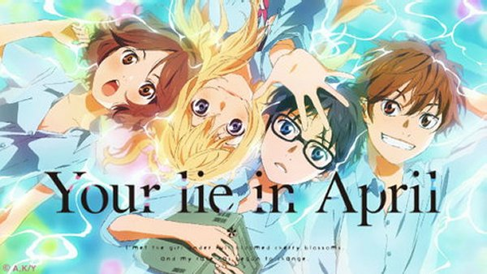

FAVORITES
Hi! I am Miguel Joie S. Polines. I am a teenager from the city of General Trias, Cavite, Philippines. I am always a person who always wonder about anything and with this, I have a lot of favorite thoughts and hobbies. Let me introduce them to you!
FAVORITE ANIMES
- Your Lie In April (四月は君の嘘)
When I hear anime, I think of this anime. Not only because it portray a real-life scenario but it bring tears to my eyes. It was one of the best anime I've ever watched. The songs that are accompanied with this anime, which are Orange by 7!!, and Kirameki to name some. It also introduced me to Classical music which I really love.
Reference: https://www.ungeek.ph/wp-content/uploads/2016/02/Your-Lie-in-April-Kimiuso-Hulu.jpg
- Re:Zero (Re:ゼロから始める異世界生活)
When you need an anime that has a moral lesson and character development, Re:Zero is the best anime I can give. This was so good to the point that I printed some of the characters of this anime and posted it to my room, for example, the best girl Rem. Even though those characters are just an imaginary non-fiction character, their story, their portrayed roles gives me chills.

Reference: https://www.heypoorplayer.com/wp-content/uploads/2021/01/ReZero-TPotT-Banner.jpg
- Anohana: The Flower We Saw That Day (あの日見た花の名前を僕達はまだ知らない)
When you lost a friend, you can clearly feel the emotion that this anime brings. This anime is about a girl who was died and her circle of friends are doing things to remember her. It makes me cry at the last episode because that is where the peak of the movie, wherein the emotion really get high. It's been 10 years since this anime was released and some considered it still as their best anime. Though it is only an 11-episode anime series, your time won't be put on waste if you watched this.
Reference: https://www.collegefashion.net/wp-content/uploads/2019/01/anohanajpg.jpg
FAVORITE PLACES
- Japan
Of course, if you love anime, you love Japan. I do love the culture, I do love the discipline and most of all, I love the way they talk. I love their language.

Reference: https://photos.smugmug.com/Kyoto/Kyoto-Romantic-Cherry-Blossom-Itinerary/i-dQdfWJD/0/4575e10a/L/shutterstock_1017748132-L.jpg
- Philippines
Although I hate how other Filipinos behave, I do love being a Filipino and I do love my own country, but not it's citizens. I do love the islands, I do love the foods, our culture and most important of all is that even though I sometimes have a hate for some of the citizens of our country, I do still believe that someday, it would be a place worth living.
Reference: https://www.heypoorplayer.com/wp-content/uploads/2021/01/ReZero-TPotT-Banner.jpg
- Spain
Even though they ruled us before, I do still love the culture of Spain. I do love it's citizens too. Because I do love music and Spanish do really love musics, I think I will fit here well. If I would be given a chance, I would stay here every time I am free. Not only because of the country itself, but because of the people of it. I do have friends who currently living in Spain for several months or years and they are always telling me that Spanish people are so nice and they do understand each other quickly because of some words we actually borrowed from the Spanish before.

Reference: https://www.studyandgoabroad.com/wp-content/uploads/2018/10/studyspain.jpg